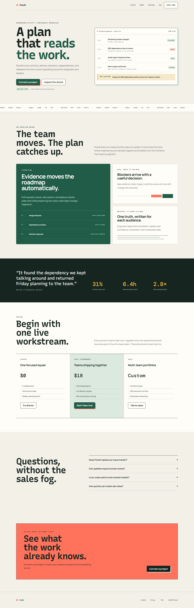
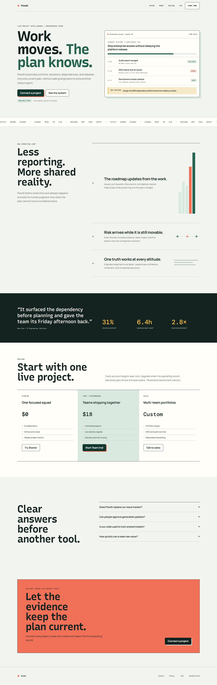
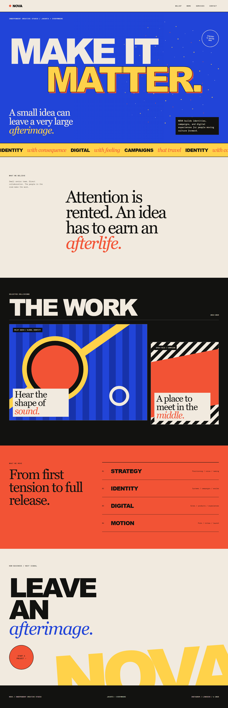
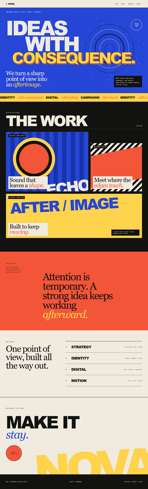

Accepted v2 baselineBaseline

The baseline on the left was reference-anchored. The proof on the right was authored from the original brief and the connected canonical quality profile. It changes copy and composition while retaining the lane's product intent, credible artifact, type roles, palette commitment, focal hierarchy, rhythm, and close.



